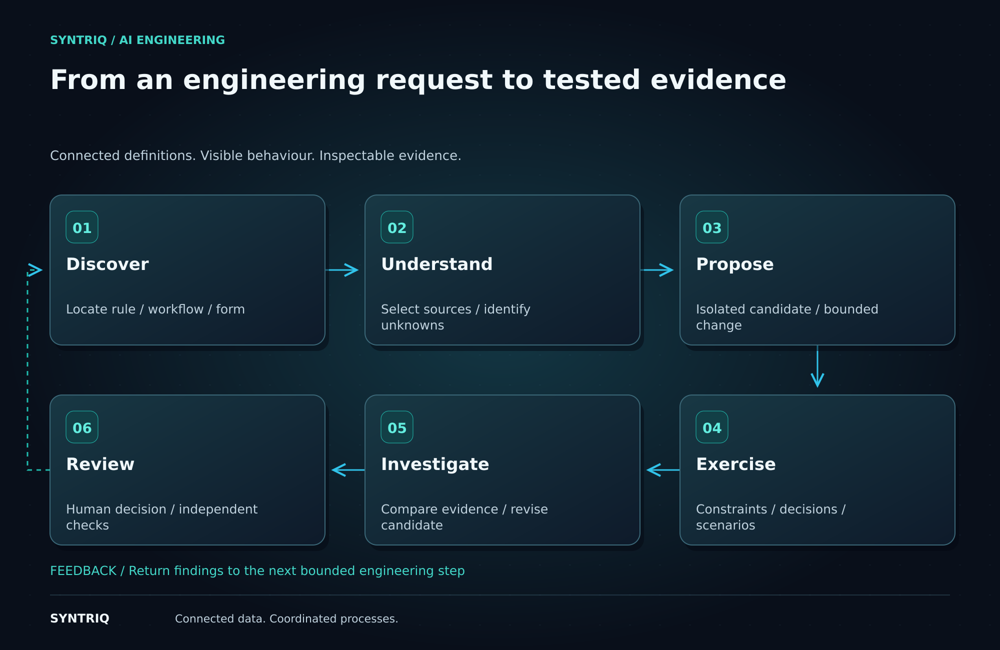

Begin with a bounded request
An engineer asks for an additional approval when an agreement exceeds a threshold. The task sounds straightforward, but it touches the facts collected by a form, a decision policy, a process route and the scenarios used to check behaviour.
The first step is to establish the intended change and its boundaries. Which agreements are affected? What quantity is compared? What happens exactly at the threshold? Questions that remain unanswered belong in the task journal.
Find and inspect the existing capability
The catalogue locates the relevant rule and related components. The Context Engine selects source definitions, contracts and applicable evidence. The workbench records their versions, making the basis of the proposal visible.
Cloud reasoning receives this focused context through the authenticated model adapter. The browser coordinator retains task control. A source reference or dependency that cannot be resolved becomes a reported gap rather than an invented implementation detail.
Propose a change in an isolated workspace
AI proposes a bounded candidate. The engineer should be able to compare it with the original definition and understand which components changed. The candidate has its own identity so subsequent evidence can be attached to exactly the version being examined.
The capability broker validates tool requests against supported schemas and permissions. Reading a definition, evaluating a policy and applying a mutation are distinct operations. External capabilities, including optional MCP providers, have explicit boundaries.

Exercise the consequences
The scenario collection includes an agreement below the threshold, one exactly at it, one above it and one missing a required fact. Additional cases can exercise incompatible quantities, repeated commands or a workflow interruption where relevant.
Runtime results show the policy outcome, reason and process consequence. The engineer compares baseline and candidate behaviour. If an unexpected result appears, AI can inspect the trace, revise the candidate and request another supported run. Earlier evidence stays associated with its original version.
Review the change and its evidence
The final review brings together the request, candidate difference, selected sources, scenario results and remaining questions. The task journal explains the sequence of attempts. Independent repository checks provide additional validation before release.
This workflow illustrates the AI integration design; it is not a live API demonstration on the static website. Its value is the structure of the engineering process: application knowledge becomes context, tools produce observations and the engineer retains an inspectable basis for a decision.
Turn a request into a reviewable change with evidence tied to the candidate being considered.